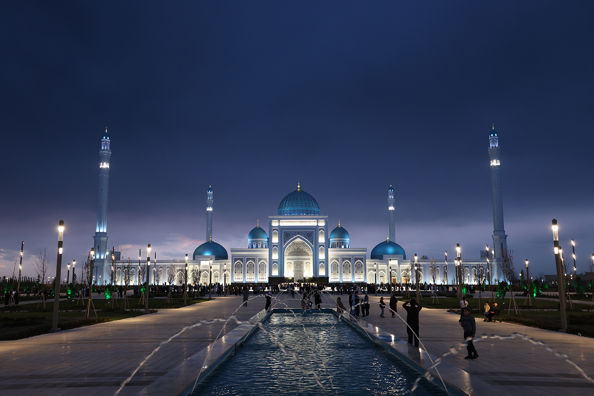

Тошкент · Самарқанд · Термиз — беш кун, уч шаҳар, битта буюк мерос
Форум ҳақида
I Халқаро Ислом Цивилизацияси Форуми Ўзбекистон Республикаси раҳбарияти ташаббуси билан ташкил этилади. Форум ислом цивилизациясининг бой маънавий ва интеллектуал меросини тадқиқ қилиш, тинчлик ва диалогни мустаҳкамлаш мақсадида дунёнинг турли мамлакатларидан олимлар, мутахассислар ва давлат арбобларини бир жойга тўплайди.

Маршрут
Тафсилий жадвал
Асосий мавзулар
Глобал йўналиш
40+ мамлакатдан меҳмонлар — уч шаҳар бўйлаб бир йўналиш